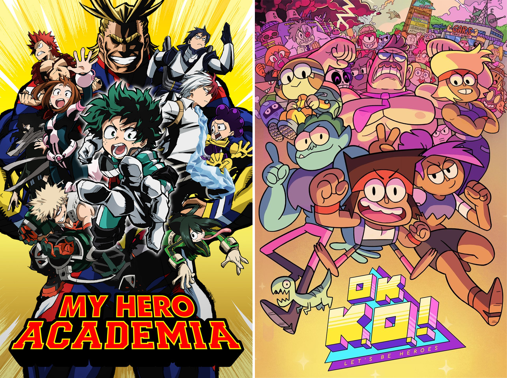
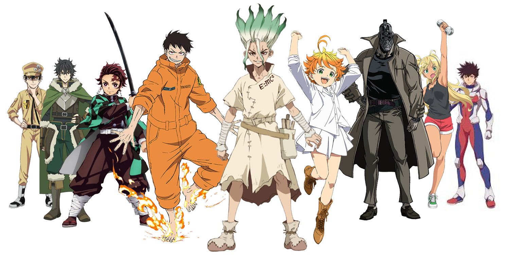

About
Games
How Search Works
News
Search
Anime Fan Helper: World News
Show all
Anime Related
Cartoon Related
Convetion Related
Current Story
Gaming Related
Informative
Old News
Pop Cuture Related
Reviews
Sonic Live Action Redesign Story.
If you haven’t heard already, Sonic from the upcoming "Sonic the Hedgehog" live-action movie starring Jim Carrey as Sonic's nemesis Doctor Robotnik and Ben Schwartz as the voice of Sonic received a full redesign. This is an unheard-of event in the movie industry. Click to continue reading.
Review of Radiant.
Welcome to our review of Radiant. Radiant is an anime and a manfra that began in 2013. Nope, I did not spell manfra wrong. Click to continue reading.
Anime Vs. Cartoon: What is the difference.

How does an anime differ from a cartoon? Many have asked this question and even more have answered with different answers. Some say there is no difference. Others say anime is from Japan and cartoons are from America. While these are valid answers, there is a better answers. Click to continue reading.
Review of RWBY.
RWBY is an amazing show. In the age of the internet, many new animations come from streaming services. One of the most popular self-publishing video website is Youtube. While many people use it to show their animation skills and pilot episodes, not many Youtube animations have reached RWBY’s level. Click to continue reading.
Top 5 anime of 2019.

What were the top 5 anime of the year? Did you're favorite make the list? Find out now in this thrilling news story. List does not include continuing anime series. Click to continue reading.
What is a Furry?
You may have heard the term “furry” before, but do you really know what it means or where it comes from? How about what does it mean in today's context? Do you need to own a fur suit to be a furry? Do you know what a fur suit is? Today, I’m going to answer these and a whole lot of other questions. I may even debunk a few myths and rumors about furries. Click to continue reading.
Demon Slayer is Overrated!
Back in my Top 2019 Anime List, I put Demon Slayers as number 3 to a please the masses. At the time of that writing, I had yet to finish season 1 or read the manga. I have since finished watching season 1 although I still have yet to read the manga. That being said, based on season 1, I think it should’ve... Click to continue reading.
.